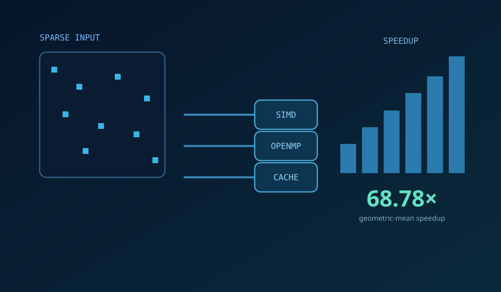

Agentic & Applied AI
LLM agents, retrieval, tool use, workflow automation, APIs, and human-in-the-loop systems.
CORE FOCUS
Hi, I’m Mortadha
Building AI systems that connect research with practical applications—from intelligent agents to satellite vegetation monitoring.
Agentic AI · Computer Vision · Remote Sensing · ML Systems

Applied AI, machine learning, and research systems.
LLM agents, retrieval, tool use, workflow automation, APIs, and human-in-the-loop systems.
Deep learning, computer vision, data science, model evaluation, and experimentation under real constraints.
High-performance ML, temporal modeling, remote sensing, multimodal data, and research-grade pipelines.
01 / Featured work
Selected projects across intelligent agents, applied AI, and computer vision.

Agentic AI · Research tools
A research workspace in development that turns a question, datasets, and papers into a checked analysis. It coordinates retrieval, Python, and SQL through a visible agent workflow.
Key capabilities

Applied AI · Product systems
A deployed commerce and knowledge platform built during my AI engineering internship. It connects store operations and fulfillment with a curated, searchable knowledge base.
Key capabilities
 1st place · 93.4% accuracy
1st place · 93.4% accuracy
Computer vision · Model evaluation
I trained and combined three convolutional networks for a low-resolution image challenge, finishing first with 93.4% test accuracy.
Key capabilities


Mobile development · Applied AI
A React Native fitness app with an integrated AI coach. I built the chat experience and FastAPI service, with FAISS retrieval and Gemma powering training and nutrition support.
Key capabilities
More selected work
 24.73× faster epoch
24.73× faster epoch01 / Training systems
A fixed network. The same reference loss. A training epoch accelerated through sparse operations, SIMD, and careful memory layout.
 0.946 ROC-AUC
0.946 ROC-AUC02 / Applied machine learning
Detecting rare provider fraud with 74 engineered features and cost-aware decisions that balance missed cases against investigation effort.

68.78× geometric-mean speedup03 / Performance engineering
Turning a sparse transcriptomics workload into an efficient CPU kernel. First place through cache-aware layout and vectorized execution.
02 / Current research
Learning what healthy vegetation should look like—then finding the pixels that depart from that pattern.


I compare a Random Forest baseline with Presto temporal embeddings and added radar, weather, terrain, and nearby vegetation context. The question: which inputs improve expected NDVI estimates? Training and validation use 2022–2025; 2026 remains an unseen test.
03 / Published research
Peer-reviewed publication
A comparative analysis of explainability methods for machine learning models.
Can different explanation methods agree on what drives a prediction? Our study compares SHAP and LIME across four classifiers to examine consistency in heart-disease risk explanations.
 Lecture Notes in Networks and Systems
Lecture Notes in Networks and Systems
Research communication
I presented my satellite vegetation-monitoring research at a GVSU pitch competition, where I was a finalist.
GVSU Pitch Competition · FinalistExplore the research ↗04 / Experience
Building useful systems, from applied AI products to satellite research.
Graduate research · Current
2026—Grand Valley State University · Grand Rapids, MI
Researching vegetation-stress monitoring from multisensor satellite time series and foundation-model representations.
See current researchApplied AI
2026Asjai Lou Casting · Remote / New York
Built a deployed commerce and knowledge platform integrating APIs, webhooks, secure workflows, retrieval, and backend services.
View the platform case studyProduct engineering
2025Smart It Partner · Tunis
Integrated RAG and recommendation workflows into a mobile product and built computer-vision capabilities for wildlife monitoring.
Explore related workNetwork intelligence
Aug–Nov 2023Tunisie Telecom · Tunisia
Analyzed network-monitoring data to identify service issues, unusual traffic patterns, and signs of potential attacks. Turned operational signals into clear findings to support troubleshooting and network-security investigations.
05 / Skills & Expertise
A focused technical profile across intelligent systems, machine learning, and research engineering.
# machine learning & computer vision
import torch
import tensorflow as tf
import sklearn
# agents & retrieval
import langgraph
import langchain
focus = ["Vision", "RAG", "Tool use"]# data & earth observation
import pandas as pd
import numpy as np
import ee
# services & performance
from fastapi import FastAPI
stack = ["SQL", "Docker", "Git"]
systems = ["C++", "OpenMP", "SIMD"]I connect language models with retrieval, tools, and APIs to build usable AI applications.
Selected recognition
Competition results, published research, and academic milestones.
Three-model image-classification ensemble · 93.4% test accuracy
Sparse kernel optimization · 68.78× geometric-mean speedup
Explainable medical AI · ICR’26 proceedings
Presenting AI for satellite vegetation monitoring
Merit-supported graduate study and applied AI research
Computer Science · Ranked first across all bachelor years
The precision challenge
Stop the clock at exactly 3.00 seconds. Beat the timing bot’s precision.
One button. One shot. Ready?
Keep your cool. Trust your timing.
A simulated timing rival. Try Connect Four below for an opponent powered by minimax search.
A little friendly competition. A good conversation starter.
06 / Playground
Pick a quick match or try Connect Four. Win or lose, let’s build something together.
Quick match
You are X. Get three in a row before the AI gets three O’s.
AI: minimax search · perfect play should never lose.Hard mode
You are the cream pieces. Connect four horizontally, vertically, or diagonally.
AI: depth-limited minimax · alpha-beta pruning · threat evaluation.Let’s connect
I build AI applications, evaluate machine learning models, and turn research into working systems. If that fits your team, I’d love to talk.
ghnimim@mail.gvsu.edu